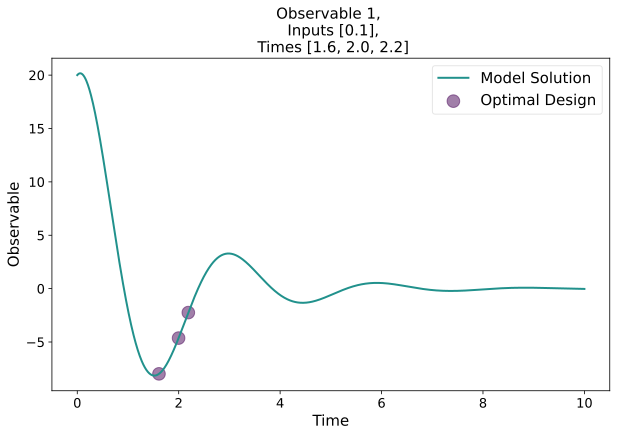

Damped Oscillator#
A damped oscillator can be described by the second order ordinary differential equation
Here we additionally assume that the parameter \(\mu\) depends on another input variable \(h\) via \(\mu(h)=ah + b\). To obtain a first-order equation, we substitute \(\dot{x}=A\) and \(x=B\) and obtain
This is now a first order ODE with the parameters \(a,b,\lambda\) and the input variable \(h\). Now we can begin with the numerical description of the system. It is good practice to first import every needed libraries at the top of our file.
7import numpy as np
8from eDPM import *
To define the system numerically, we write the preceding equations as a function. Only the right-hand side of the ODE equation.
10# Defines the right hand side of the ODE of an parametrized damped oscillator
11def damped_osci(t, y, inputs, parameters, ode_args):
12 a, b, l = parameters
13 h, = inputs
14 A, B = y
15 return [
16 -(a*h+b)*A - l*B,
17 A
18 ]
We seek to maximize the amount of information in the system to most accurately estimate the parameters \((a, b, \lambda)\). To achieve this, we must also define the derivatives of the ODE equation. with respect to the components of the ODE \((A, B)\) and the parameters.
20# Derivative of the RHS of the ODE with respect to the components of the ODE
21def damped_osci_dfdx(t, y, inputs, parameters, ode_args):
22 a, b, l = parameters
23 h, = inputs
24 A, B = y
25 return [
26 [-(a*h+b), -l],
27 [1, 0]
28 ]
29
30# Derivative with respect to the parameters
31def damped_osci_dfdp(t, y, inputs, parameters, ode_args):
32 a, b, l = parameters
33 h, = inputs
34 A, B = y
35 return [
36 [-h*A, -A, -B],
Now we have defined the overall structure of the ODE but are still lacking actual numerical values to be able to solve the system. We gather them in the main function of our script and start with the initial guesses of the parameters.
41# The main function executes the script and gathers every needed numerical value.
42if __name__ == "__main__":
43 # Define initial parameter guesses
44 a = 3.0
45 b = 1.0
46 l = 5.0
47 parameters = (a, b, l)
Next, we define the initial values of the ODE system. Notice, that since we have a two-component system, we need to define values for \((A, B)\), meaning in our case the variable \(x\) as well as its time derivative \(\dot{x}\). In the next steps, we define helper variables to later pick explicit values for the input variable \(h\) and a range to optimize time points \(t_i\) when to evaluate the solution of the ODE.
53 # Numerical values for the input variable h
54 h_low = 0.08
55 h_high = 0.12
56 n_h = 1
57
58 # Numerical values for time points
59 times_low = t0
60 times_high = 10.0
61 n_times = 3
The next statement fixes the explicit values of \(h\).
63 # Gather information on inputs in list
64 inputs = [
65 np.linspace(h_low, h_high, n_h)
66 ]
A short inspection reveals that the following lines of code yield us with a numpy array of explicit values.
# Numerical values for the input variable h
>>> h_low = 0.08
>>> h_high = 0.12
>>> n_h = 1
>>> np.linspace(h_low, h_high, n_h)
array([0.08])
So far we have not yet used the methods developed in this package. But now we are ready to define the fisher model which can then be solved to obtain optimal conditions for our experimental design.
68 # Create a fisher model containing all information of the system.
69 fsm = FisherModel(
70 ode_fun=damped_osci,
71 ode_dfdx=damped_osci_dfdx,
72 ode_dfdp=damped_osci_dfdp,
73 ode_t0=times_low,
74 ode_x0=x0,
75 times={"lb":times_low, "ub":times_high, "n":n_times},
76 inputs=inputs,
77 parameters=parameters,
78 )
The next step solves this model and actually does the optimization. The result is called a fisher result and contains information on final values and the optimization procedure.
80 # This finds the optimal time points to estimate the parameters
81 fsr = find_optimal(fsm)
When executing the script in a terminal, the output might look like the following.
sh-5.1$ python examples/damped_oscillator.py
============================== SUMMARY OF FISHER MODEL ==============================
=================================== ODE FUNCTIONS ===================================
├─ode_fun damped_osci
├─ode_dfdx damped_osci_dfdx
└─ode_dfdp damped_osci_dfdp
=================================== INITIAL GUESS ===================================
├─ode_x0 [array([ 6., 20.])]
├─ode_t0 [0.]
├─times [[ 0. 5. 10.]]
├─inputs [array([0.08])]
├─parameters (3.0, 1.0, 5.0)
├─ode_args None
├─identical_times False
└─covariance CovarianceDefinition(rel=None, abs=None)
=============================== VARIABLE DEFINITIONS ================================
├─ode_x0 None
├─ode_t0 None
├─times VariableDefinition(lb=0.0, ub=10.0, n=3, discrete=None, min_distance=None, unique=False)
├─inputs [None]
├─parameters (3.0, 1.0, 5.0)
├─ode_args None
├─identical_times False
└─covariance CovarianceDefinition(rel=None, abs=None)
================================== VARIABLE VALUES ==================================
├─ode_x0 [array([ 6., 20.])]
├─ode_t0 [0.]
├─times [[ 0. 5. 10.]]
├─inputs [array([0.08])]
├─parameters (3.0, 1.0, 5.0)
├─ode_args None
├─identical_times False
└─covariance CovarianceDefinition(rel=None, abs=None)
=================================== OTHER OPTIONS ===================================
└─identical_times False
============================= STARTING OPTIMIZATION RUN =============================
differential_evolution step 1: f(x)= -8.01838e-12
differential_evolution step 2: f(x)= -8.01838e-12
differential_evolution step 3: f(x)= -8.01838e-12
differential_evolution step 4: f(x)= -8.15833e-12
differential_evolution step 5: f(x)= -8.15833e-12
differential_evolution step 6: f(x)= -8.15833e-12
differential_evolution step 7: f(x)= -8.15833e-12
differential_evolution step 8: f(x)= -1.13942e-11
differential_evolution step 9: f(x)= -1.17195e-11
differential_evolution step 10: f(x)= -1.17195e-11
differential_evolution step 11: f(x)= -1.17195e-11
differential_evolution step 12: f(x)= -1.17195e-11
differential_evolution step 13: f(x)= -1.75116e-11
differential_evolution step 14: f(x)= -1.75116e-11
differential_evolution step 15: f(x)= -1.75116e-11
differential_evolution step 16: f(x)= -1.75116e-11
differential_evolution step 17: f(x)= -1.75116e-11
differential_evolution step 18: f(x)= -1.99191e-11
differential_evolution step 19: f(x)= -1.99191e-11
differential_evolution step 20: f(x)= -1.99191e-11
================================= OPTIMIZED RESULTS =================================
===================================== CRITERION =====================================
├─fisher_determinant 1.9919075539958553e-11
├─sensitivity matrix [[ -0.80156668 -10.01958349 6.56496328]
│ [ -1.04401692 -13.05021153 4.18222325]
│ [ -1.02766883 -12.84586043 1.74355491]
│ [ 0.37171508 4.64643853 0.96671143]
│ [ 0.13627137 1.70339212 2.33633093]
│ [ -0.05091669 -0.63645857 2.86981462]]
├─inverse covariance matrix [[1. 0. 0. 0. 0. 0.]
│ [0. 1. 0. 0. 0. 0.]
│ [0. 0. 1. 0. 0. 0.]
│ [0. 0. 0. 1. 0. 0.]
│ [0. 0. 0. 0. 1. 0.]
│ [0. 0. 0. 0. 0. 1.]]
================================ INDIVIDUAL RESULTS =================================
Result_0
├─ode_x0 [ 6. 20.]
├─ode_t0 0.0
├─times [1.77272691 2.02130042 2.19968034]
├─inputs [0.08]
└─parameters (3.0, 1.0, 5.0)
========================== DISCRETIZATION PENALTY SUMMARY ===========================
├─penalty 1.0
├─penalty_ode_t0 1.0
├─penalty_inputs 1.0
├─penalty_times 1.0
└─penalty_summary {'ode_t0': [], 'inputs': [], 'times': []}
sh-5.1$
In our final step we can visualize the results by autmatically generating images or saving results as a json file.
83 # Automatically plot the results and export as json file
84 plot_all_solutions(fsr, outdir="out")
85 json_dump(fsr, "damped_osci.json")
This image shows one of the results of this optimization run. You can see the \(B\) component of the ODE.
